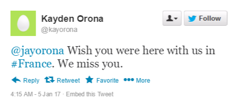

Since a lot of fic writers like to involve social media in
their fics, why not do it with some style and flai than just
a few lines of text? Technically, you could make an actual
embedded Tweet, but it wouldn't be formatted the way we like
it, so let's try this with some work skins. The code on this
page provides several examples and options you can do with
tweets.
Capturing a picture of a Tweet

The easiest method to "embed" tweets is to use a tweet
generator, save the pic, then upload them to any image
hosting site of your choice.
Your HTML should look like this:
<p align="center"><img class="twEasy" src="http://imgur.com/Yll9hGE.png" alt="Example of Image Tweet" width="760" height="288" /></p>
The corresponding CSS should look like this:
.twEasy{
max-width: 300px;
height: auto;
}
The pros of this is that it's super duper easy to implement, but the cons is that you may not have crisp lines
that you'd get from formatting. You also can't highlight text. If you're not comfortable with spending a bunch
of time fiddling with HTML, then you can use this.
Text-Only Tweets
Now say you want to do this Tweet thing with higlightable text. So you want something like this.
The full CSS code can be found in the following entry, but the HTML used for this is as follows:
<div class="tw">
<p class="twBody">
<span>
<img class="twAvatar" src="http://imgur.com/tzkpXGS.png">
<span class="twUser">
<span class="twUserName">Kayden Orona
<img class="twIcon" src="http://imgur.com/eVQzzhT.png">
</span>
<br>
<span class="twUserHandle">@kayorona</span>
</span>
<img class="twFollow" src="http://imgur.com/p6lbN22.png">
<br>
</span>
<span class="twText">
<a class="twLink">@jayorona</a> Wish you were here with us at
<a class="twLink">#France</a>. We miss you.
</span>
<span class="twTimeStamp">
3:09 PM - 5 May 2014
</span>
<span>
<img class="twReplyIcon" src="http://imgur.com/9dwkilY.png">
<span class="twRetweet">
<img class="twRetweetIcon" src="http://imgur.com/ToOoCJz.png">
2,144
</span>
<span class ="twLike">
<img class="twHeartIcon" src="http://imgur.com/67stmhs.png">
2,901
</span>
</span>
</p>
</div>
As you can see, there are some icons required to load some of these things, most of I which I made
myself for you to use. Here's a list of the links.
The avatar is just a sample one, so feel free to use your own. Be
sure to make the avatar square shaped, because the code won't truncate it
for you. All Twitter avatars get resized to 40px wide, so keep that in mind.
Essentially, you don't touch the tags, just edit the text as you see fit. If you need to make links, just
make links like you usually do in HTML. I've been unable to remove the decorative line underneath it, but using
spans breaks the HTML, and AO3 refuses to let me remove it. So... it's a little less authentic.
Single Image Tweets
Now, how about if you want to attach an image to your tweet? This isn't much different from your original
text-only tweet. You just need to make sure you tag the img tag with "twImage"
The maximum width of these simulated tweets are 300px wide, so
if you don't want your picture to be blown up, try to stay above
that width. Don't worry about making your pictures too big, because
tagging it as "twImage" should fit the image in the div container.
HTML:
<div class="tw">
<p class="twBody">
<img class="twImage" src="https://upload.wikimedia.org/wikipedia/commons/9/9a/French_Formal_Garden_in_Loire_Valley.jpg">
<span>
<img class="twAvatar" src="http://imgur.com/tzkpXGS.png">
<span class="twUser">
<span class="twUserName">Kayden Orona
<img class="twIcon" src="http://imgur.com/eVQzzhT.png">
</span>
<br>
<span class="twUserHandle">@kayorona</span>
</span>
<img class="twFollow" src="http://imgur.com/p6lbN22.png">
<br>
</span>
<span class="twText">
<a class="twLink">@jayorona</a> Wish you were here with us at
<a class="twLink">#France</a>. We miss you.
</span>
<span class="twTimeStamp">
3:09 PM - 5 May 2014
</span>
<span>
<img class="twReplyIcon" src="http://imgur.com/9dwkilY.png">
<span class="twRetweet">
<img class="twRetweetIcon" src="http://imgur.com/ToOoCJz.png">
2,144
</span>
<span class ="twLike">
<img class="twHeartIcon" src="http://imgur.com/67stmhs.png">
2,901
</span>
</span>
</p>
</div>
Anyways, this is all for today. Once again, CSS is attached on the next chapter for you to look at for yourself.
I could have went the full mile and add hover effects (changing colors), but I think that would detract from
the fact that I just made this to make fictional tweets look nice on this site.
Emoji Implementation
It's not a Tweet unless you can add emojis!(Smiling Face With Open Mouth And Smiling Eyes )
Thankfully, someone's already done work for that! For full
documentation, see All the Emoji
by CodenameCarrot. It's really easy to implement, and is
non-intrusive to the tweet structure. Another advantage to formatted Tweets instead of images is that they're easy to change.
All you gotta do is go the editing chapter and fix a few things. Or you could just copy and paste
from your IDE like I do. Either way, less steps! (Winking Face )

 Kayden Orona
Kayden Orona


 2,144
2,901
2,144
2,901